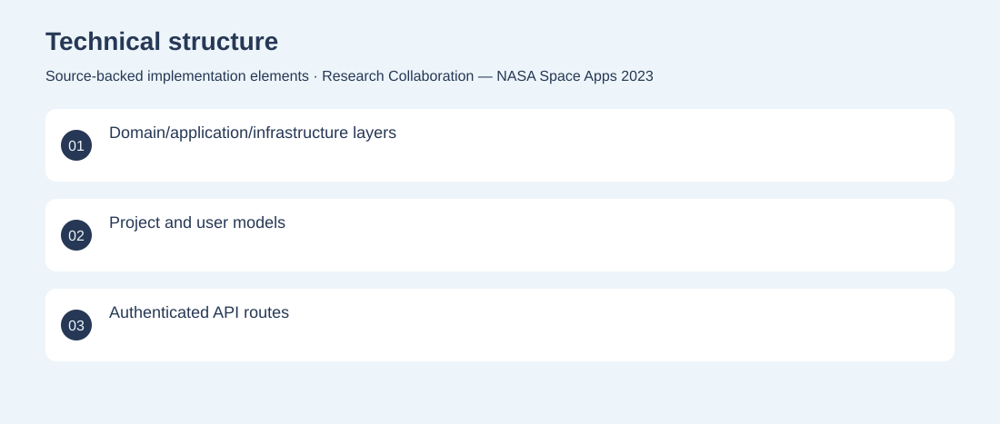
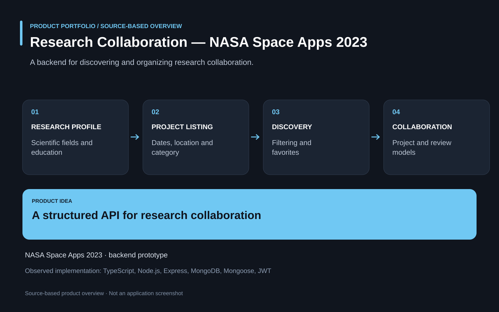

The project
Research collaboration requires structured project listings and information about participants and disciplines. A TypeScript API models projects, user profiles, scientific fields and reviews, with project filtering, creation and favorites. Developed backend domain models, project services, user routes and authentication middleware for the hackathon prototype. Archived NASA Space Apps 2023 backend prototype; frontend and public deployment not verified in this repository.
The problem
Research collaboration requires structured project listings and information about participants and disciplines.
The solution
A TypeScript API models projects, user profiles, scientific fields and reviews, with project filtering, creation and favorites.
My contribution
Developed backend domain models, project services, user routes and authentication middleware for the hackathon prototype.
Technical structure

Product overview

The portfolio cover is an editorial illustration. No live product screenshot is presented for this project.
Showcase assets
{kind=link}
{kind=link}
{kind=link}
New portfolio identity. Newly designed marks are portfolio treatments, not claims of official client branding.